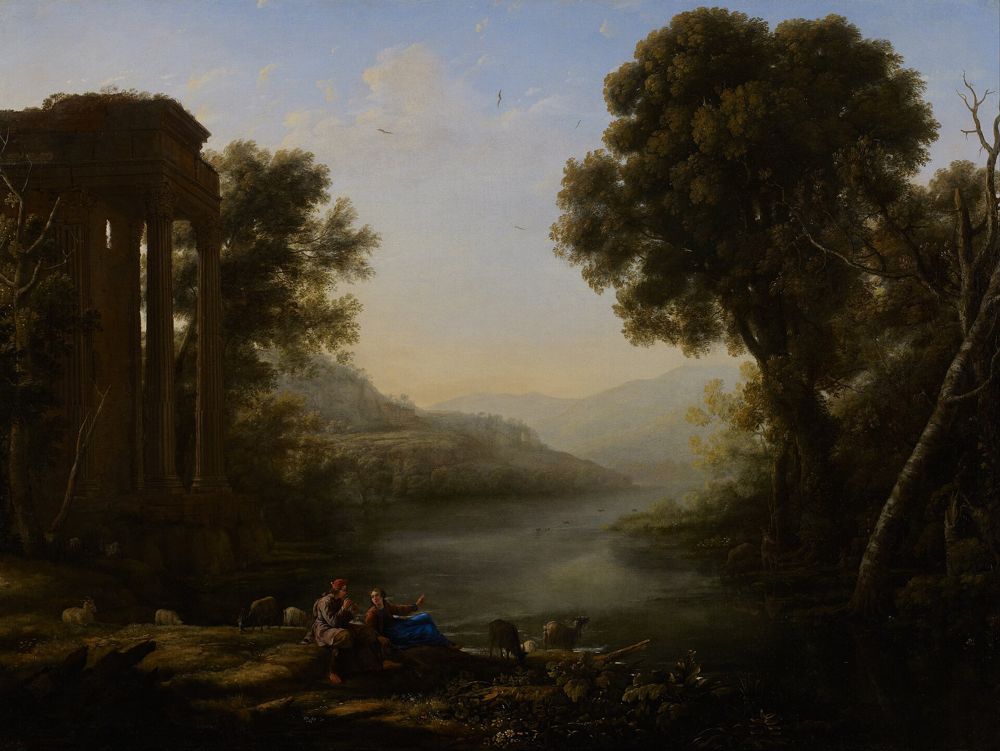
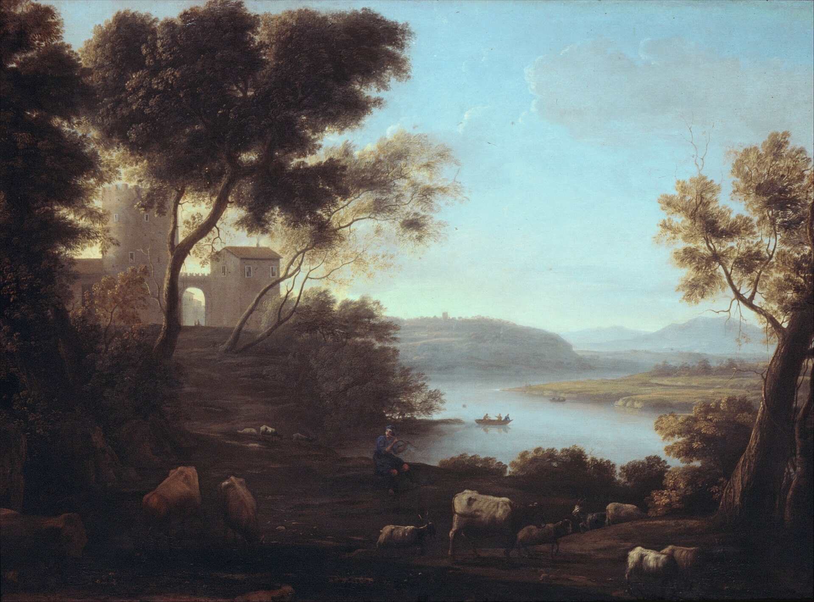
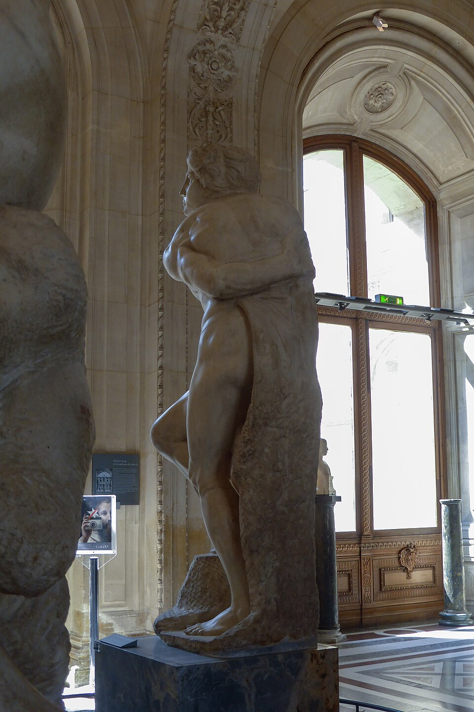
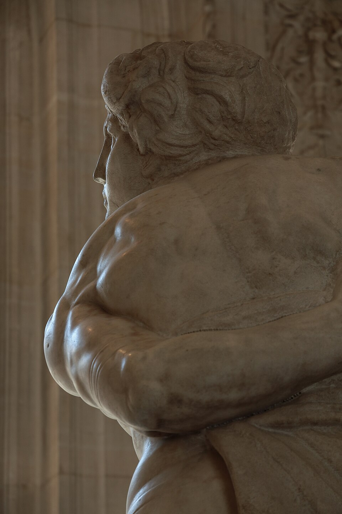
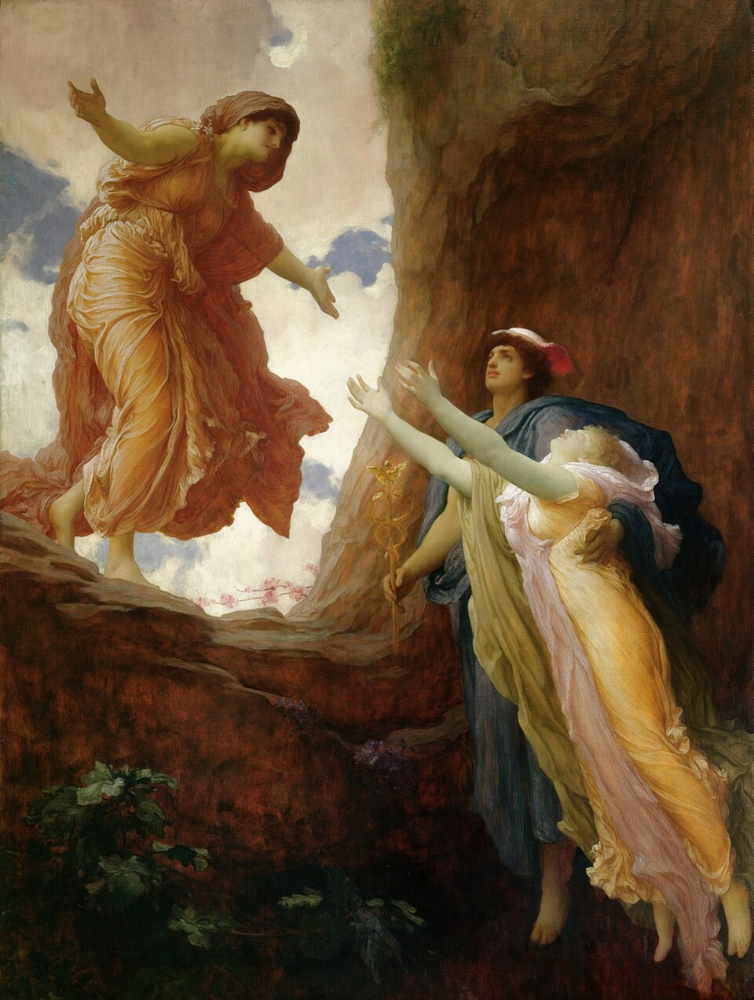
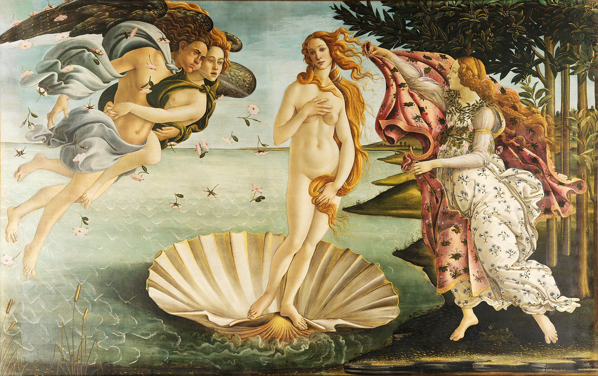
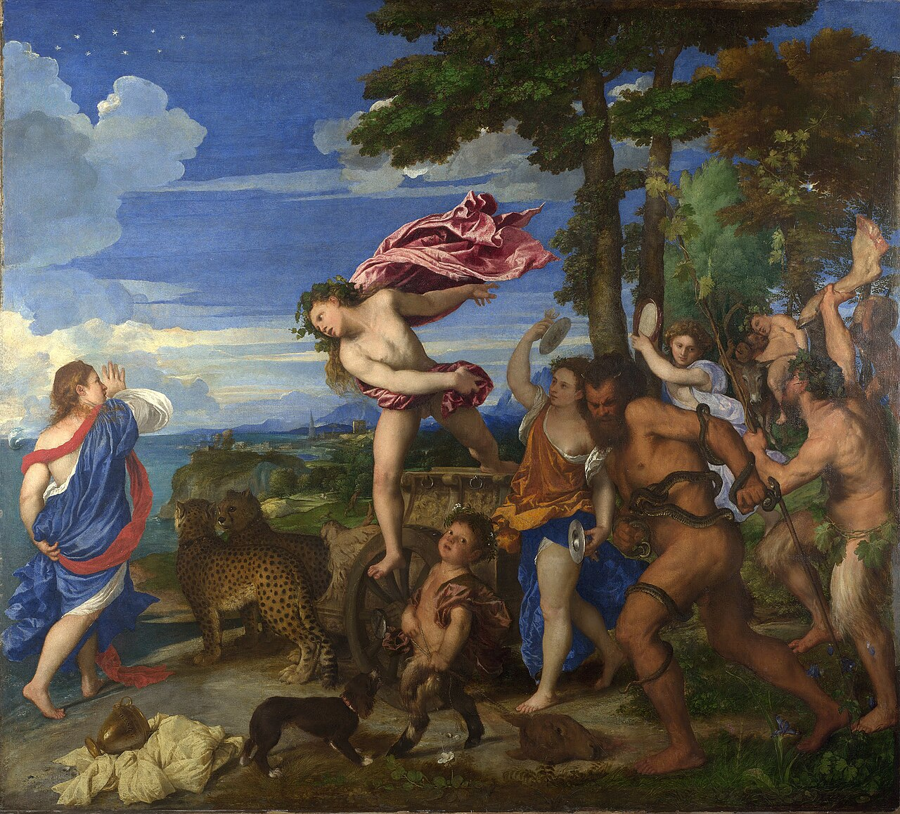
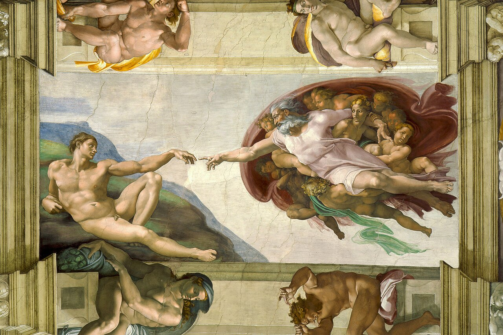
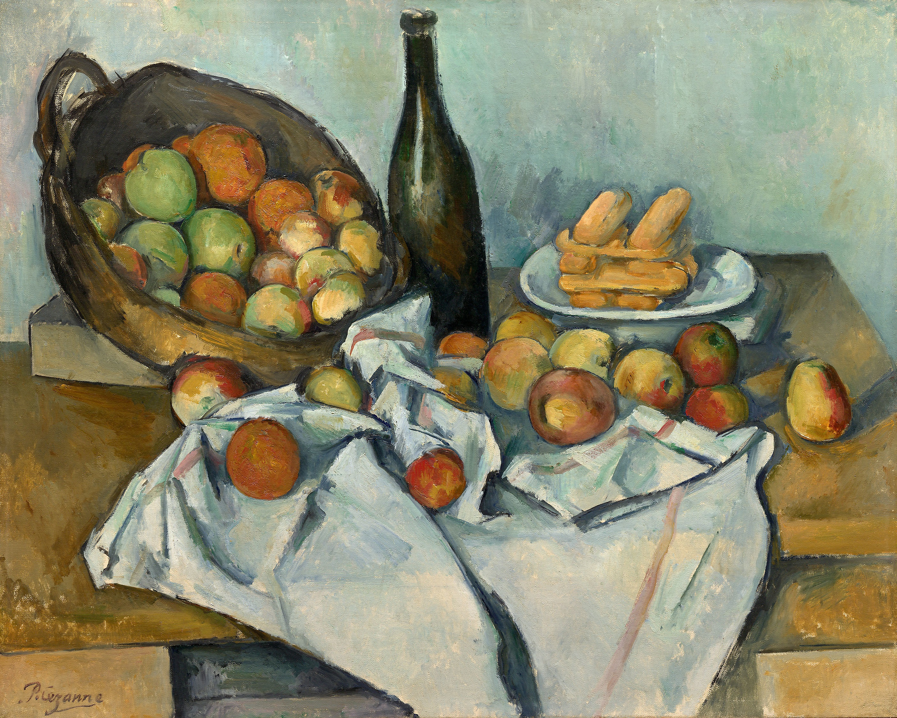

Italian Landscape with Umbrella Pines — Hendrik Voogd, 1807, Rijksmuseum (SK-A-4688). Public Domain (CC-PD-Mark) · 7058×5104. Umbrella pines exactly as briefed; warm aged fresco tone; ground plane for figures. Alteration: darken center-left tree mass, extend sky, mild desaturate. Central space: partial — statue must sit in the sunlit clearing right of center or canvas is mirrored.

Pastoral Landscape — Claude Lorrain, 1638, Minneapolis Institute of Art. Public Domain Mark · 5939×4463. Trees frame both edges, open golden center, big sky. Alteration: remove small staffage figures/animals, cool the yellows slightly. Central space: excellent.

Pastoral Landscape: The Roman Campagna — Claude Lorrain, c.1639, The Met (65.181.12). CC0 1.0 · 3811×2820. Cleanest license (CC0), serene open middle. Alteration: remove herdsman/cattle, slight contrast lift. Central space: very good, slightly lower resolution.
Rebellious-Slave-2-Louvre — photo Yair Haklai, 2007. Public Domain (author release) · 1920×2560. Frontal-left 3/4; bound arm raised across chest — apple reads naturally released from beneath this hand. Plain wall behind = practical masking. Meets 2000px height min.

JBU21 — photo Jörg Bittner Unna. CC BY-SA 3.0 (attribution + share-alike) · 3264×4896. Sharper/larger frontal view. Share-alike condition on the derivative collage is a legal burden — use only if PD option fails.

JBU31 — photo Jörg Bittner Unna. CC BY-SA 3.0 · high res, alternate 3/4 turn. Same share-alike caveat.
3 · Female student — source candidates

The Return of Persephone — Frederic Leighton, 1891. Public Domain (artist d.1896) · 1056×1400 ⚠ low res. Persephone: ivory flowing drapery, BOTH arms reaching upward, gaze up — exactly the catch gesture. Plan: cut her figure, repaint resolution up (2× enlarge + painted cleanup), add coral notebook in the non-reaching hand. If res proves insufficient we search a larger scan or museum source first.

Birth of Venus (Hora of Spring, right figure) — Sandro Botticelli, c.1485, Uffizi. PD-Art (PD-old) · very high res Google Art Project scan. The Hora lunges with both arms extended holding the cloak — strong reach, patterned ivory dress. Alteration: mirror to enter from left, remove cloak, add modern object. More recognisable/meme-adjacent — riskier tonally.
4 · Male student — source candidates

Bacchus and Ariadne (Bacchus figure) — Titian, 1520–23, National Gallery London. PD-Art (PD-old-100) · 4670×4226. RECOMMENDED. Bacchus leaps leftward mid-air, rose/burgundy drape flying, right arm back left arm forward — cut him, flip nothing (already faces left), tone drapery to terracotta, add one sneaker detail + small bright bag. High res, dynamic, unmistakably painted.

Creation of Adam (Adam) — Michelangelo, Sistine ceiling. PD-Art · high res. The most iconic reaching arm in art history — but reclining pose can't "enter walking from the right"; also over-quoted. Backup for gesture reference only.
5 · Apple candidate

The Basket of Apples — Paul Cézanne, c.1893, Art Institute of Chicago (1926.252). CC0 1.0 · 2811×2250. Several isolated red apples on the cloth (front row) crop cleanly at 300–400px each; visible brush texture, deep vermilion with gold highlight. One will be cut, edge-softened, warmed toward crimson. Alternative: paint an original apple in the same palette if the crop reads too post-impressionist next to the Renaissance figures.
6 · Proposed composite mockup (rough clips, positions per brief)
Rough CSS clip-paths only — real cutouts come after approval. Statue 50% x, baseline ~84% h · female enters 21%→35% · male 83%→65% · apple starts 51.5%/38% in the raised-hand zone, falls the gold corridor to ~70%.
apple startapple end ~70%female 21%→35%male 83%→65%